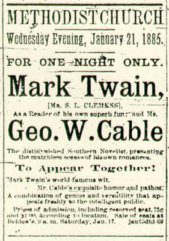
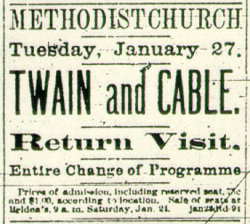

|

[MT and Cable performed twice in Madison, Wisconsin -- on 21 and 27 January. The local Madison Democrat was only a four-page paper, published every day but Monday. A small ad for the first lecture, announced as the only lecture, began running on 17 January. The same issue also included an item about the event in the paper's editorial column. The same ad ran each day until the show, but almost each day there was a different editorial blurb:] Madison Democrat, 17 January 1885: -- Mark Twain's world famous wit; Mr. Cable's exquisite humor and pathos; crowded houses everywhere. Never before have two noted writers received so generous a welcome. Remember the date, Wednesday evening, Jan. 21. Madison Democrat, 20 January 1885: -- A sure cure for the blues. Those will laugh who never laughed before. Mark Twain and
George W. Cable at the Methodist church, Wednesday evening, Jan. 21. This is Mark Twain's
first appearance as a public reader in twelve years, also his last. Remember the date, Wednesday,
Jan. 21. Madison Democrat, 21 January 1885: -- Do not fail to purchase your tickets for Twain and Cable to-night at the Methodist church. The
readings of the two eminent authors will be the grand entertainment of the winter.  [Although the ads for the first performance had prominently said "FOR ONE NIGHT ONLY," the second performance, billed as a "Return Visit," was announced immediately after the first. The ads for this next show promised "An Entire Change of Program," and the daily editorial blurbs also found new ways to promote the engagement:] Madison Democrat, 23 January 1885: -- Mark Twain and Geo. Cable, by special request, will return and give one reading at the Methodist church, Tuesday evening, January 27th. An entire change of programme. Tickets on sale at Belden's, Saturday at 9 a.m., Jan. 24. Madison Democrat, 24 January 1885: -- The return visit of Twain and Cable at the Methodist church Tuesday evening, January 27, will give our citizens a rich treat. The programme is entirely new. This night being the only night of the season and our people have the benefit. Tickets now on sale at Belden's. Madison Democrat, 25 January 1885: -- Twain and Cable at the Methodist church Tuesday evening, January 27. Not since the days of Dickens has there been such a rush to hear these popular readers. Buy your tickets at Belden's and avoid the rush. Madison Democrat, 27 January 1885: -- Mark Twain and Geo. W. Cable were greeted by large and enthusiastic audiences at St. Paul and Minneapolis the past week. This is the most successful combination on the road. Secure your seats at Belden's for to-night's entertainment. [Also in the paper for the day of this second performance was a blurb more or less disguised as a news story:] Madison Democrat, 27 January 1885: Twain and Cable at the Methodist church this (Tuesday) evening, Jan. 27th. Remember this will
be the last opportunity of hearing these two celebrated readers. There will be an entire change of
programme. |